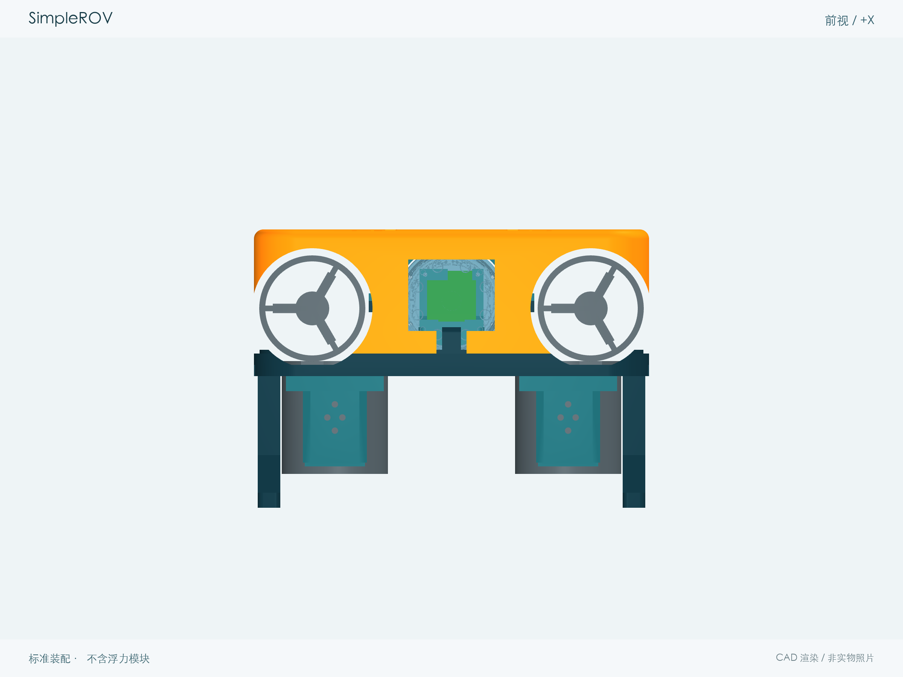
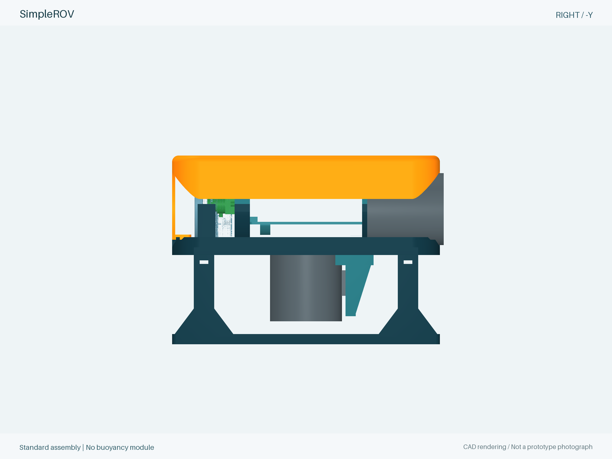
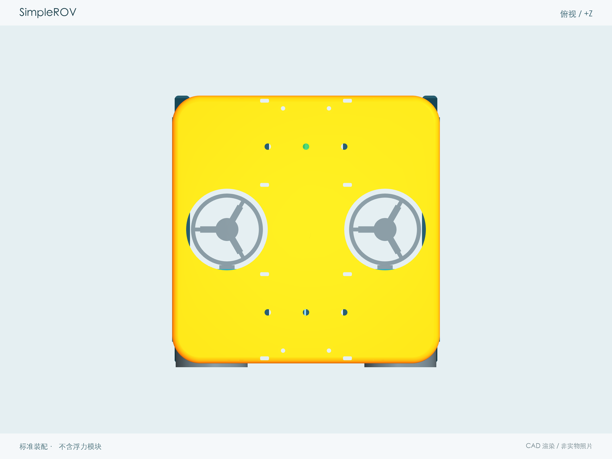
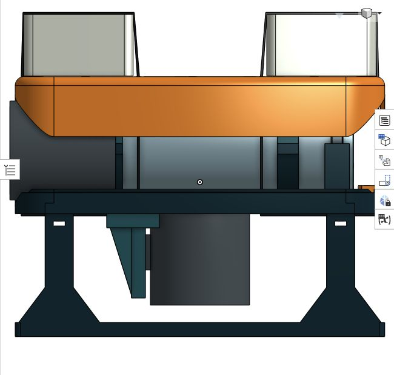

Structure gallery
Nine 2400 × 1800 CAD views show the current geometry. Standard views omit top foam and straps. The six orthographic views share one field of view: X forward, Y left, Z up.
These are renderings, not prototype photographs. Thrusters are reconstructed dimensional references; the camera and enclosure use attributed supplier CAD. Enclosure parts use an opaque display finish for legibility; display colors are not procurement specifications. Unselected electronics and wiring are not illustrated.
Standard assembly

Orthographic views
| Front | Rear |
|---|---|
 |
 |
| Left | Right |
|---|---|
 |
 |
| Top | Bottom |
|---|---|
 |
 |
Interior

The fairing and all pressure-enclosure components are hidden to expose the existing camera, tray, frame and thrusters. Final electrical layout and positive tray retention remain pending.
Optional buoyancy

Foam is selected from measured mass and trim. It is not part of the default assembly. See buoyancy and trim.
Onshape screenshots
The following are actual captures of the historical public Onshape assembly viewport. They show the optional buoyancy foam and straps fitted; current default foam-free assemblies are defined by the repository STEP files. The screenshots retain the original geometry and view state, cropped to the CAD viewport; they are not synthetic illustrations.


Open Onshape. Ten printed parts are imported editable solids without native sketch history. The commercial rear cap imported as an open reference shell; local OEM STEP remains the supplier reference. See round-trip checks.
Provenance
Rendering source · CAD view metadata and hashes · Onshape capture record.